Already we are familiar with decimal numbers. We know how to represent a decimal number as a fraction and the place values of digits. Now, let us learn the operations on decimal numbers.
1.3.1 Addition and Subtraction of Decimal Numbers
Iniya has purchased notebooks for ₹ 46.50 and a pencil box for ₹ 16.50. How much will she get as balance if she paid ₹ 100 to the shop keeper?
Price of a note book = ₹ 46.50 ; Price of a pencil box = ₹ 16.50
To find the amount to be paid, we have to add the price of both the items.
To get the balance amount we have to subtract the total expense from ₹ 100. To know the total expenses and the balance money, we need to understand addition and subtraction of decimals.
Addition and subtraction of decimals through models
Decimal grid or area models can be used to understand the process of addition and subtraction using decimal numbers.
(i) Grid model
We see below the grids to represent the decimal numbers 1.0, 0.1 and 0.01.
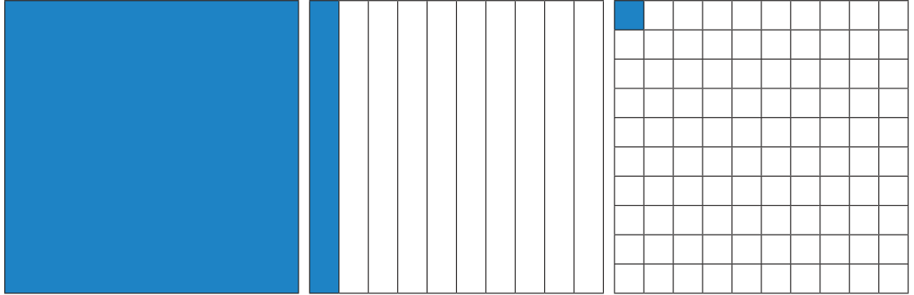
One whole, 10 by 10 Grid represents 1 or 1.0
Each column represents one tenth or 0.1
Each square represents one hundredth or 0.01
Having these grids let us try to do addition and subtraction of decimal numbers.
Example 1.5 Find the sum of 0.16 and 0.77 using decimal grid models.
Solution
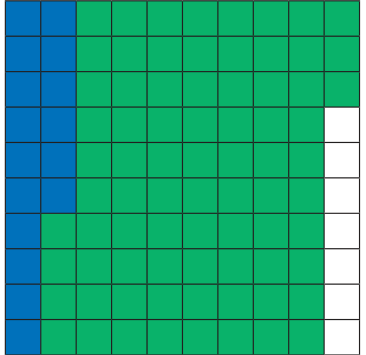
Here, \(0.16 = \frac{16}{100}\) and \(0.77 = \frac{77}{100}\)
First shade the region 0.16 and then shade 0.77.
That is, first shade 16 squares out of 100 and then shade 77 more squares, which means total shaded region is 93 squares out of 100.
The total shaded area is the sum.
So, \(0.16 + 0.77 = 0.93\) .
Example 1.6 Find \(0.52 - 0.08\) using decimal grid models.
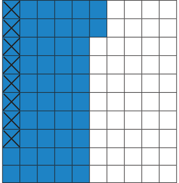
Solution
Here \(0.52 = \frac{52}{100}\) and \(0.08 = \frac{8}{100}\). First shade the region 0.52 then cross out 0.08, which is \(\frac{8}{100}\) from the shaded area. The left out shaded region without cross marks is the difference.
So, \(0.52 - 0.08 = 0.44\).
Example 1.7 Find the value of \(0.72 - 0.51\) by using grids.
Solution
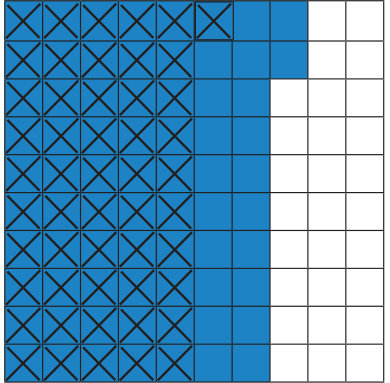
Take a square of 100 boxes. Shade 72 boxes to represent 0.72.
Then strike out 51 boxes out of 72 shaded boxes to subtract 0.51 from 0.72.
The left over shaded boxes represent the required value.
Therefore, \(0.72 - 0.51 = 0.21\).
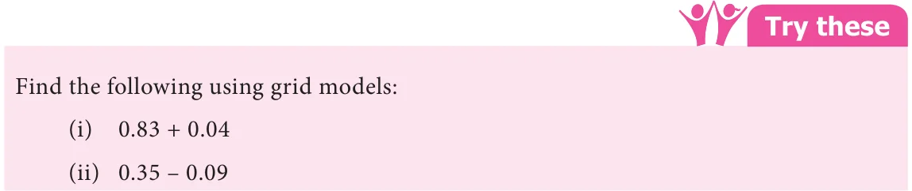
(ii) Area model
The whole number (unit place) which is a part of decimals represents a square area and \(\left(\frac{1}{10}\right)^{\text{th}}\) part of this square area which is a thin rectangular strip represents the tenth place of the decimal (0.1) and \(\left(\frac{1}{100}\right)^{\text{th}}\) part of this square area which is a smaller square represents the hundredth place value (0.01) and the same process will be continued for the next place and so on.
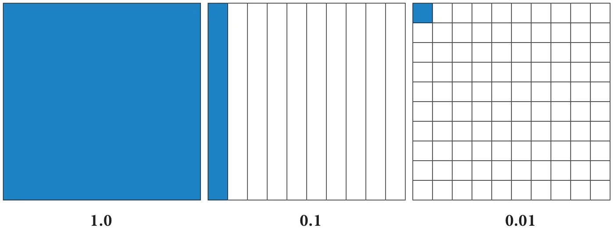
Having these square and rectangular area let us try to do addition and subtraction of decimal numbers.
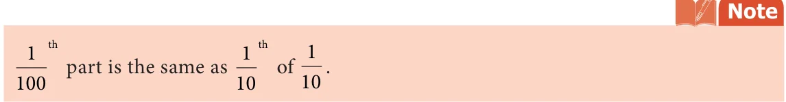
Example 1.8 Add \(3.2 + 6.4\).
Solution
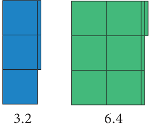
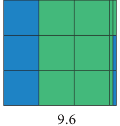
Here 3.2 is represented in Blue colour and 6.4 is represented in Green colour. Hence, the sum of 3.2 and 6.4 is 9.6.
Example 1.9 Subtract \(7.5 - 3.4\) .
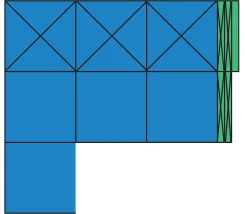
Solution
First represent the decimal number 7.5 using 7 squares and 5 rectangular strips. Cross out 3 squares from 7 squares and 4 rectangular strips from 5 rectangular strips to get the difference (see Fig. 1.5).
Hence, \(7.5 - 3.4 = 4.1\).
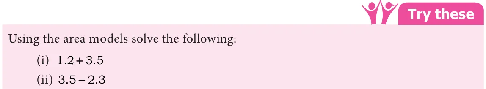
(iii) Place value grid model
So far we have discussed grid models to do addition and subtraction of decimal numbers. Earlier we have studied representation of decimal numbers in place value tables. Let us use the same representation for addition and subtraction of decimal numbers.
For example, while adding 4.83 and 1.67, we have
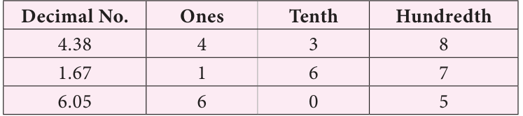
Therefore, \(4.38 + 1.67 = 6.05\).
Example 1.10 Add the following : (i) \(30.9 + 52.73\) (ii) \(25.67 + 33.856\)
Solution
(i) \(30.9 + 52.73\)
Let us use the place value grid.
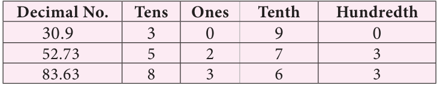
(Since the digits in the decimal place of 52.73 is 2 and 30.9 is 1, we should add 0 at the hundredth place of 30.9 to equalise the digits in the decimal place)
Therefore, \(30.9 + 52.73 = 83.63\).
(ii) \(25.67 + 33.856\)
Let us use the place value grid.
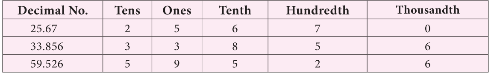
Therefore, \(25.67 + 33.856 = 59.526\).
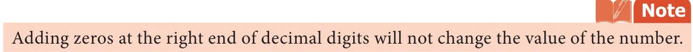
Example 1.11 Everyday Malar travels 1.820 km by bus and 295 m by walk to reach the school. Find the distance of school from her house in km.
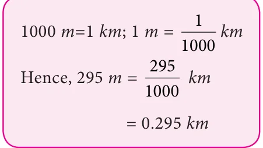
Solution
Distance travelled by bus \(= 1.820\) km
Distance covered by walk \(= 0.295\) km
Total distance \(= 1.820 + 0.295\)
\(= 2.115\) km
Therefore, the school is situated at a distance of 2.115 km from her house.
Example 1.12 Subtract 2.85 from 4.97.
Solution
\(4.97 - 2.85 =\) ?
Let us use the place value grid.
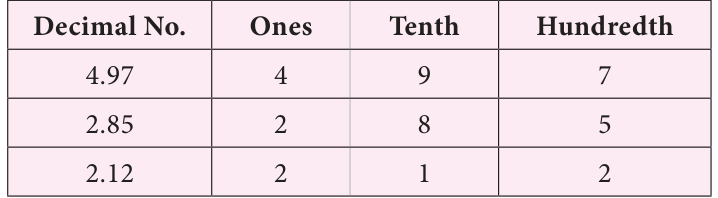
Therefore, \(4.97 - 2.85 = 2.12\).
Example 1.13 Subtract 3.09 from 12.7.
Solution
\(12.7 - 3.09 =\) ?
Let us use the place value grid.
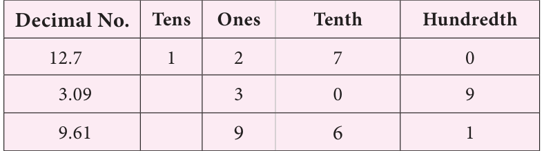
Therefore, \(12.7 - 3.09 = 9.61\).
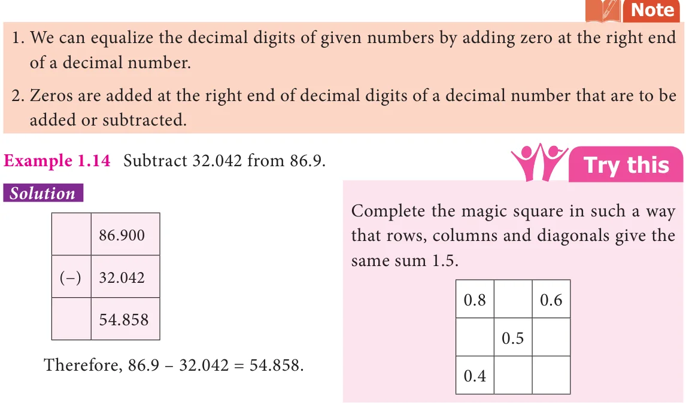
Example 1.15 Naren bought 7.4 kg of mangoes. On the way home, he gave 4.650 kg of mangoes to his sister's family. Find the weight of the remaining mangoes.
Solution

Mangoes bought by Naren \(= 7.4\) kg
Mangoes given to Naren's sister \(= 4.650\) kg
Weight of remaining mangoes \(= 7.400 - 4.650\)
\(= 2.750\) kg
Therefore, the weight of the remaining mangoes is 2.750 kg.
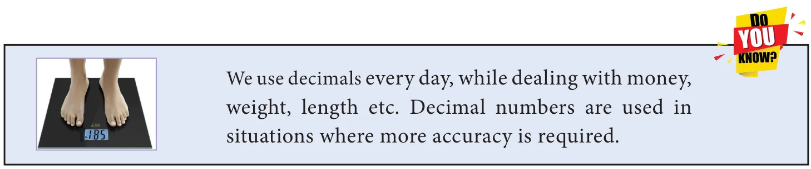